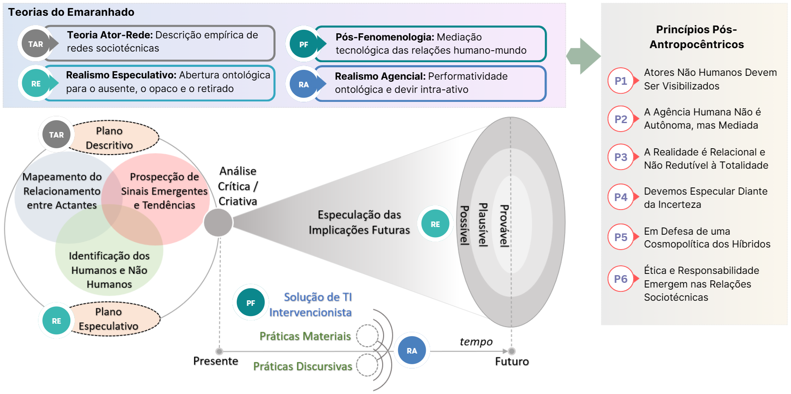

O SEF (Sociotechnical Entanglement Framework) é o framework que operacionaliza os princípios do SpED (Speculative Entangled Design), oferecendo uma estrutura prática para apoiar processos de análise, especulação e design em ecossistemas sociotécnicos complexos. O framework serve como base conceitual e metodológica do FutureEntangled Toolkit, organizando o uso integrado das ferramentas que compõem a plataforma.
Desenvolvido a partir de teorias contemporâneas do emaranhamento sociotécnico, como a Teoria Ator-Rede, o Realismo Especulativo, o Realismo Agencial e a Pós-Fenomenologia, o SpED traduz fundamentos filosóficos complexos em um conjunto de princípios pós-antropocêntricos incorporados ao SEF para orientar o design de Sistemas de Informação.

O SEF organiza o processo de investigação e design a partir de três movimentos complementares: compreender o presente, especular futuros e orientar decisões responsáveis de intervenção.
Mapeia o ecossistema sociotécnico atual, identificando actantes humanos e não humanos, relações, dependências, tensões, práticas, instituições e condições que moldam o contexto investigado.
Explora sinais emergentes, tendências e implicações futuras, reconhecendo que o futuro não é único nem totalmente previsível, mas pode ser especulado de forma crítica e situada.
Orienta a construção de soluções de TI e intervenções sociotécnicas que potencializem implicações desejáveis, reduzam riscos e distribuam responsabilidades entre os diferentes actantes envolvidos.
O FutureEntangled Toolkit foi concebido diretamente sobre essa estrutura, transformando o SEF em uma abordagem aplicável em oficinas, processos de inovação, ensino, pesquisa e design estratégico. Dessa forma, o framework conecta fundamentos teóricos avançados a práticas concretas de desenvolvimento tecnológico, tornando acessível a aplicação de uma perspectiva pós-antropocêntrica e sociotécnica no design de soluções digitais.
Ao integrar imaginação sociotécnica, pensamento crítico e design orientado ao futuro, o SpED posiciona-se como uma abordagem inovadora para apoiar o desenvolvimento de tecnologias mais responsáveis, sustentáveis, inclusivas e alinhadas aos desafios contemporâneos da sociedade.
Conheça o ToolkitCopyright © FutureEntangled Toolkit. Todos os direitos reservados.
Criado por Marcelo Soares Loutfi. Distribuído por SaLT